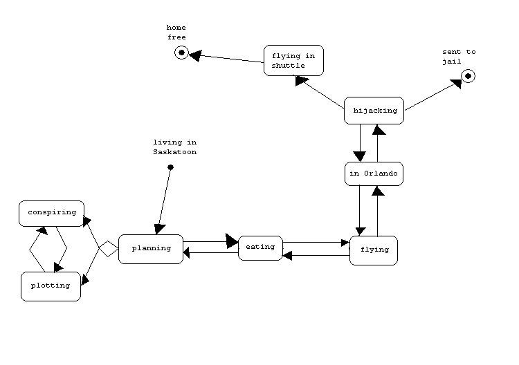

There is one meeting per month. During the meeting there are planning and conspiring sessions, during which the members discuss such things as Hostage Situations in a Weightless Environment, Negotiating with President Clinton when He's Mad, Possibilities of Getting a P-lot Sticker for the Space Shuttle, and Foods We'd Like To See In Space. If there is time at each meeting, the proper pronunciation of acronyms such as http, www, and others such as this. Occasionally, a meeting will include a trip to Orlando, Florida to watch/hijack a shuttle launch.
Membership is open to University of Saskatchewan staff, students, and alumni for free, and the general public for a small membership fee. The membership is comprised of people that are typically interested in seeing the downfall of the U.S. Space Program, people that really, really wanna fly in space but will never be astronauts, and people that just have nothing better to do.
This particular state diagram includes a typical meeting with a trip to Florida. Note that as of yet, the group has not yet been able to successfully hijack a shuttle.

Click here to return to The Magnificent Seven (minus two) homepage